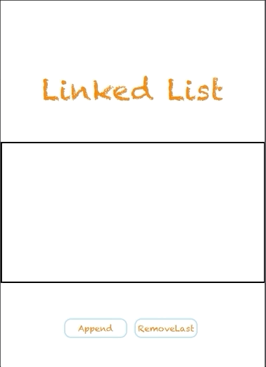

Projects that I've built

Data Structures can be daunting. Sometimes reading the lines of code is not enough to understand the concept. If you are a visual learner like me, having a visual aid can really cement a concept. I created this small project to help individuals like me who need visual aids to hit the concept home. Further, I am proud of this project because I was able to combine the concepts of data structures and iOS architecture into a clean visual representation of LinkedList. Creating this project was rewarding because it allowed me to push myself further to create a product that would be of use to individuals other than me. In the furture I want to build on this project and create visual representations of other abstract data structures such as, Stacks, Queues, Binary Search Trees etc. Moreover, I am proud of this project because I am passionate about helping others and creating a meaningful impact in the lives of the youth.
Stacks are abstract Data Structrues. This means they are natively in a programming language such as Swift. Stacks also follow LIFO (Last in first out), what this means is the last item that is entered into the Stack is the first item to the leave the stack.


This is an app which allows you to search for the events that matter to you!
Users are able to sign in to their Meetup account, They are able to search for events for events that they are interested in. Once they select an event they can favorite it, and view persons who have RSVP’D to the event. This app is responsive to network connectivity errors and also handles cases where the user may make multiple network calls while searching for an event.


Stylists is a iOS mobile app that connects you directly to hair-stylists, barbers, and makeup-artist to schedule in home services.